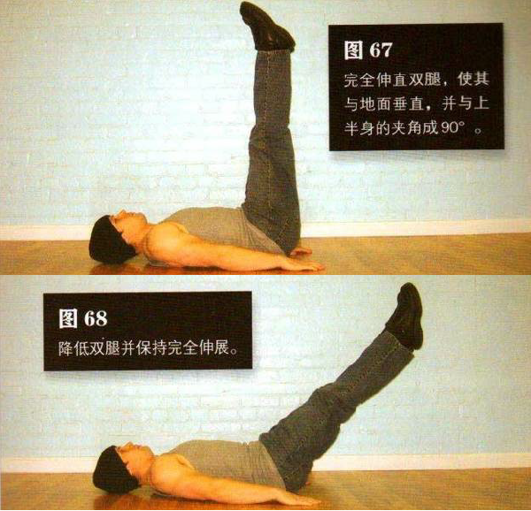
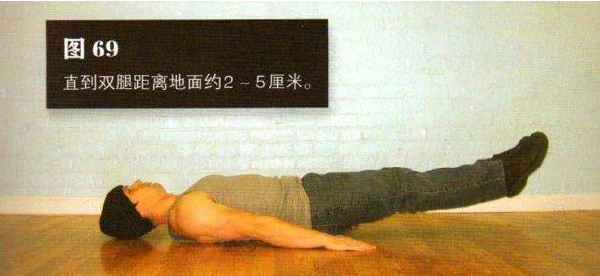

先做第三式前半部分的屈举腿动作，但在最高点的时候不要停顿，而是要完全伸直双腿，使其与地面垂直，并与上半身的夹角成90°这是该动作的结束姿势（图 67）。
应该在这个两部分的动作过程中呼气。大多数中段练习此时都要反向重复前半部分的动作，但这个练习有所不同。在有阻力（重力）的情况下降低双腿比抬起双腿要容易，蛙举腿正利用了这一点。降低双腿并保持完全伸展（图 68），直到双腿距离地面约 2-5 厘米（图 69）。大多数练习动作中上与下的过程都要经过 2秒钟，但该练习的下落过程要经过 4 秒钟，以便身体在有利的姿势中获得更多的锻炼。双腿慢慢下降时吸气，然后重复以上动作。
初级标准：1 组，8 次
中级标准：2 组，各 15 次
高级标准：3 组，各 25 次